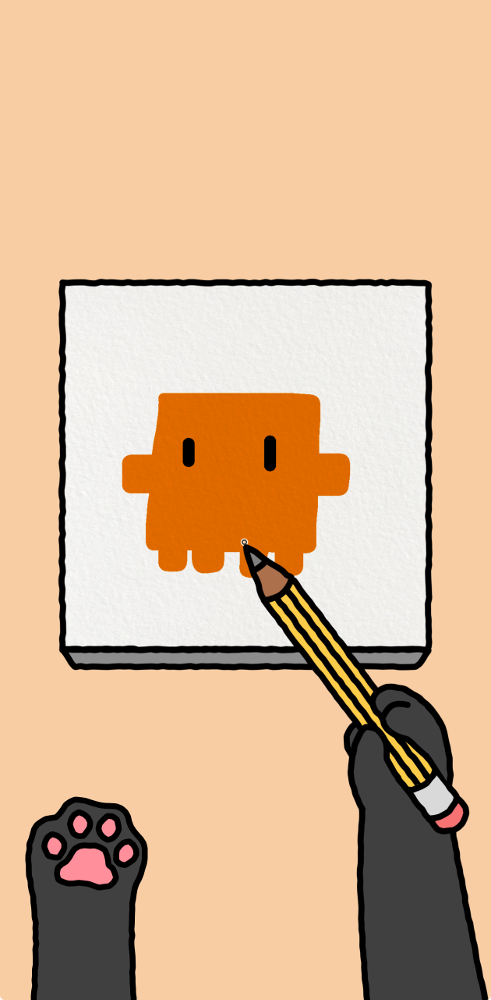
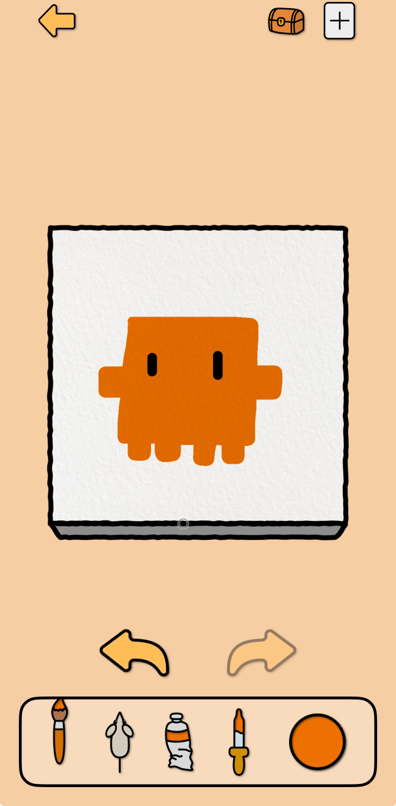
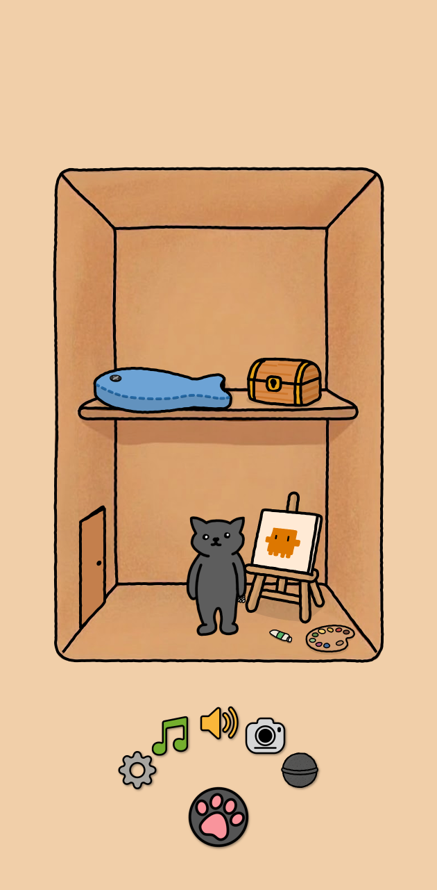

MewCanvas
Let a cat hold the brush.
Keep your drawing in view.
A mobile drawing app where your finger guides a cat’s paw. The brush draws above your touch, so you can see each line as it appears.
Our flagship app is nearing completion. MewCanvas is not yet available for download.

Drawing, without the obstruction
Your finger moves below.
Your brush draws above.
Drawing on a small screen often means covering the very spot you want to draw. It can be hard to see where a line begins, where it ends, or where your next stroke should go.
MewCanvas separates the place you touch from the place the brush draws. Move your finger in the lower part of the screen, and a cat’s paw paints above it. The line stays visible as you draw.
A character with a purpose
The cat helps the controls make sense.
A brush that draws away from your finger can feel unfamiliar. MewCanvas turns that gap into a cat’s arm: you guide the paw, and the paw holds the brush.
The character is part of the interaction itself, designed to make the drawing controls feel natural from the first stroke.
Inside the cat’s studio


Screens from the app in development.
A little life for every picture
Finish the picture.
Make it part of the cat’s home.
Draw
Guide the cat’s brush and bring your picture to life.
Name & sign
Turn the canvas over to give your artwork a name and leave your signature.
Display
Hang it in the cat’s home with a frame or tape.
Photograph & share
Use the in-app camera presentation to capture a keepsake of your displayed artwork and share it.
From the first line to a picture on the wall, the experience is built around the satisfaction of finishing something of your own.
On your device
Your artwork stays with you.
MewCanvas stores its data locally on your device. No account, no server storage, and no data collection. Sharing a finished picture is your choice.